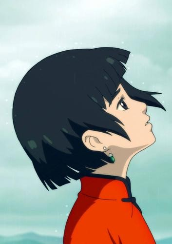

椿是国产动画电影《大鱼海棠》中的核心角色，她来自神秘的海底世界 “其他人” 族群，掌管着海棠花的生长，是一个充满魅力又极具个性的人物。
椿生性善良纯真，对世间万物怀着敬畏之心。在十六岁的成人礼上，她化身为红色海豚前往人间游历，这次经历成为了她命运的转折点。在人间，她结识了善良勇敢的人类男孩鲲，然而一场意外导致鲲为救椿而失去生命。出于愧疚与内心的善良，椿做出了一个大胆的决定。
她不顾族人 “不得与人类有过多接触” 的禁令，毅然用自己一半的寿命与灵婆交易，换回了鲲的灵魂，并将其寄托在一条小鱼身上，从此踏上了艰难的养育鲲并送他回归人间的征程。在这个过程中，椿遭遇了族人的误解、反对，甚至面临着整个海底世界可能遭受的灾难，但她始终没有放弃。她凭借着坚定的信念和对鲲的承诺，在好友湫的帮助下，一步步克服重重困难，展现出了无比的勇敢、执着以及对情感的忠贞不渝。椿的故事，是一场关于自我救赎、守护与成长的动人篇章。

湫是《大鱼海棠》中令人难以忘怀的重要角色。
他来自神秘的海底世界 “其他人” 族群，与椿一同长大，是个活泼且重情重义的少年。湫一头白发，眼神中透着灵动与不羁，性格洒脱随性。
在椿为了复活人类男孩鲲而触犯族规，踏上艰难旅程时，湫始终坚定地站在椿的身边。他陪着椿经历种种磨难，一起守护着鲲的灵魂。面对族人的质疑和可能到来的惩罚，湫毫不退缩。他不仅给予椿实际的帮助，如在关键时刻帮助椿躲避追捕，还给予她精神上的支持与慰藉。
湫对椿的感情极为深厚，那是一种超越了友情的默默守护与深情爱恋。为了椿能实现心愿，他不惜付出巨大代价，甚至最后以燃烧自己的方式，开启海天之门，送椿和鲲去往人间，他的爱热烈而无私，让人为之动容，湫以自己的生命谱写了一曲动人的深情悲歌。

鲲是《大鱼海棠》中一个极具象征意义的重要角色。
他本是生活在人间的人类男孩，善良且勇敢。在椿进行成人礼化身为红色海豚游历人间时，他们偶然相遇。当时的鲲，展现出了对海洋生物的喜爱与好奇，他在海边救助了被困在渔网中的椿，也因此与椿结下了奇妙的缘分。
然而命运弄人，在椿返回海底世界的途中，因意外致使鲲不幸丧命于漩涡之中。但他的灵魂却并未就此消逝，在椿的努力下，通过与灵婆的交易，鲲的灵魂以一条小鱼的形态被带回了海底世界。
之后，鲲以鱼的形态在海底不断成长，从小小的鱼苗逐渐变成巨大的飞鱼。他承载着椿的愧疚、希望与守护之情，在椿和湫的陪伴下，经历诸多艰难险阻，努力朝着回归人间的目标前行。鲲虽无法用言语表达，但他的存在仿佛有一种无声的力量，推动着整个故事的发展，也见证了椿和湫之间复杂而动人的情感纠葛，是影片中连接两个世界、多种情感的关键纽带。